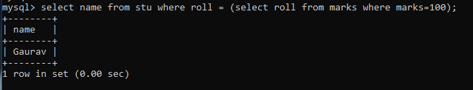
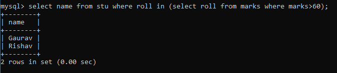
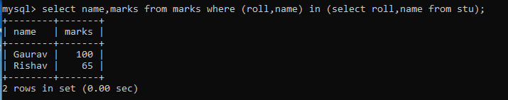
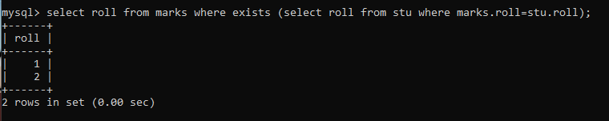

Subqueries in MySQL
A subquery is a SELECT statement that is embedded in another SELECT statement. It is used to retrieve data that will be used in the main query. Subqueries can be used in the SELECT, FROM, and WHERE clauses of a SELECT statement. They can return a single value or a set of values.
Types of Subqueries
- Single-row subquery: A subquery that returns only one row and one column. It is used with comparison operators (such as =, <, >, <=, >=, and <>).
Example:

- Multiple-row subquery: A subquery that returns multiple rows and one column. It is used with comparison operators (such as IN and NOT IN).
Example:

- Multiple-column subquery: A subquery that returns multiple rows and columns. It is used with comparison operators (such as EXISTS and NOT EXISTS).
Example:

- Correlated subquery: A subquery that uses a column from the outer query in its WHERE clause. It is used to return rows from one table based on a condition that involves another table.
Example:
